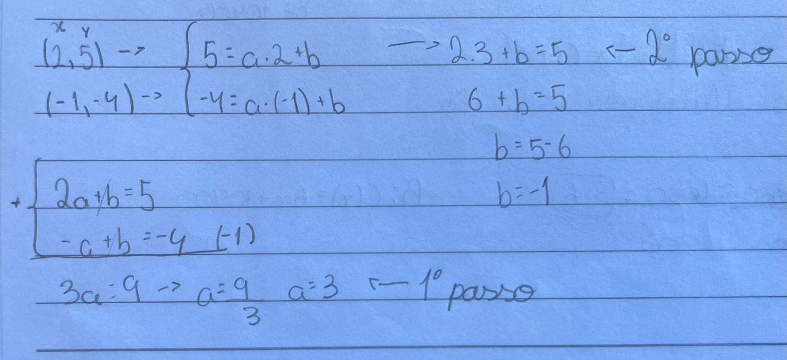
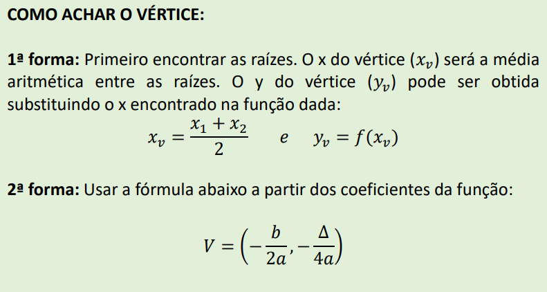
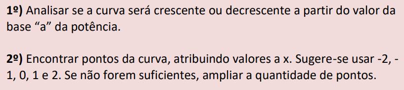
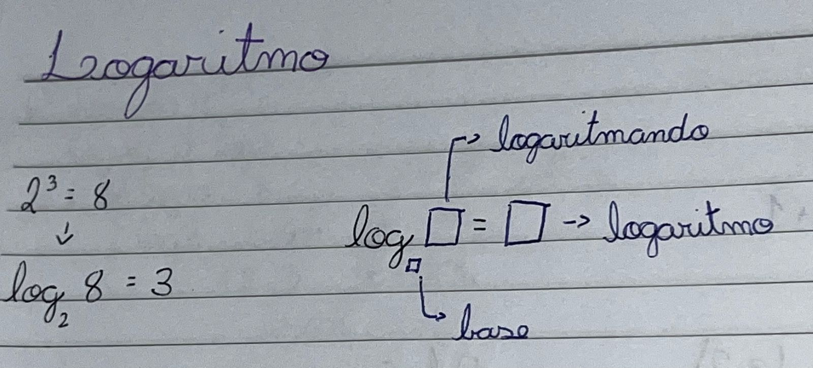
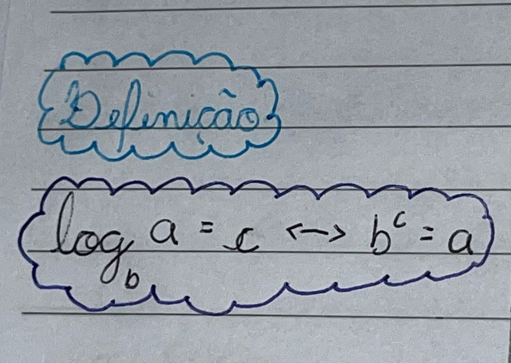

Para mim, esse conteúdo foi bem tranquilo, consegui entender todos os pontos sem muita dificuldade.
No início deste trimestre, terminamos de estudar as funções afim. Vimos a interseção de duas retas, que pelo
meu entendimento é o ponto onde as duas retas se cruzam. O ponto da interseção pode ser obtido por meio de um
sistema, onde acharemos as duas incógnitas.
O exemplo abaixo (tirado do caderno) mostra um sistema em que observamos duas retas
(equações) e depois fazemos a soma delas, escolhendo uma incógnita para achar primeiro. No caso do exemplo,
escolhi a incógnita "a", então depois de descobrí-la, escolhi uma das equações inicias para substituir o valor.
Assim, achei o valor de "a" e de "b", agora basta colocar os dois valores no gráfico para descobrir o ponto de
encontro entre as duas retas. Abaixo do exemplo, coloquei a função no geogebra e o valor da incógnitas para ver
como fica no gráfico.

Perceba que você pode mexer nos controles para uma melhor interação :)
Função Quadrática:
Achei o conteúdo de função quadrática um pouco mais difícil que o outro, mas mesmo assim consegui entender
depois de estudar e fazer vários exercícios e alguma lista.
Pelo o que eu entendi, as funções quadráticas precisam formar uma parábola quando montadas em um gráfico, e são
formadas por três números reais a, b, c. Para montar o gráfico, existem dois métodos: o método de usar a tabela
e o método de encontrar os 4 elementos principais do gráfico. Como eu preferi usar o segundo método e achei mais
fácil, vou me aprofundar somente nele na explicação.
1° passo: observar se a concavidade é para cima ou para baixo. Basta ver se a
variável a é maior ou menor que 0. Se for a > 0, a conncavidade é para cima, se for a < 0 a concavidade
é para baixo.
2° passo: achar as raízes, utilizando a fórmula de bhaskara. Os dois resultados da
fórmula serão as raízes. Uma dica para saber quantas raízes têm é observar o resultado de
delta, se for > 0 possui 2 raízes, se for = 0 possui 1 raíz, se for < 0 não possui raízes
3° passo: achar o corte no y. Basta substituir o valor de x na função pelo número 0 e o
resultado da função, depois de calcular é o corte no y. Uma dica é que é também o
coeficiente C da função.
4° passo: achar os vértices. É possível achar os vétices de duas formas. Abaixo coloquei uma
foto tirada do material dado pela professora que me fez conseguir entender melhor:

Funções Exponenciais
Inicialmente tive muita facilidade neste conteúdo. Eu entendi que as funções exponenciais são usadas para
calcular o crescimento do valor de algo em função do
tempo. Podem ser usadas para crescimento populacional (bactérias, pessoas, animais) e/ou valor de um produto
(carro, casa). A definição formal é 𝒇(𝒙) = 𝒂^x, nos problemas geralmente o x representa o tempo.
Para entender como construir o gráfico, gostei da definição que a professora colocou no material:

Tive bastante dificuldade em fazer os exercícios da família dos exponenciais, mas pedindo ajuda para a
professora durante o tempo que foi dado em aula, consegui entender melhor. A lista de exercícios também achei
complicada (principalmente as equações exponenciais) e sinto que poderia compreender melhor estudando mais, o
que pretendo fazer.
Logaritmo
A parte inicial da definição, consegui compreender bem a estrutura e como resolvê-la. A seguir, duas fotos
tiradas de meu caderno que me ajudaram muito a entender como o logaritmo funciona:


Agora, conclusões tiradas do material da professora que explicam bem o que eu entendi:
O logaritmo pode se transformar numa equação exponencial.
Logaritmando não pode ser zero nem número negativo.
A base não pode ser zero, nem 1, nem negativa.
Para o cálculo de alguns logaritmos, a transformação em equação
exponencial não ajuda, então usaremos outros métodos.